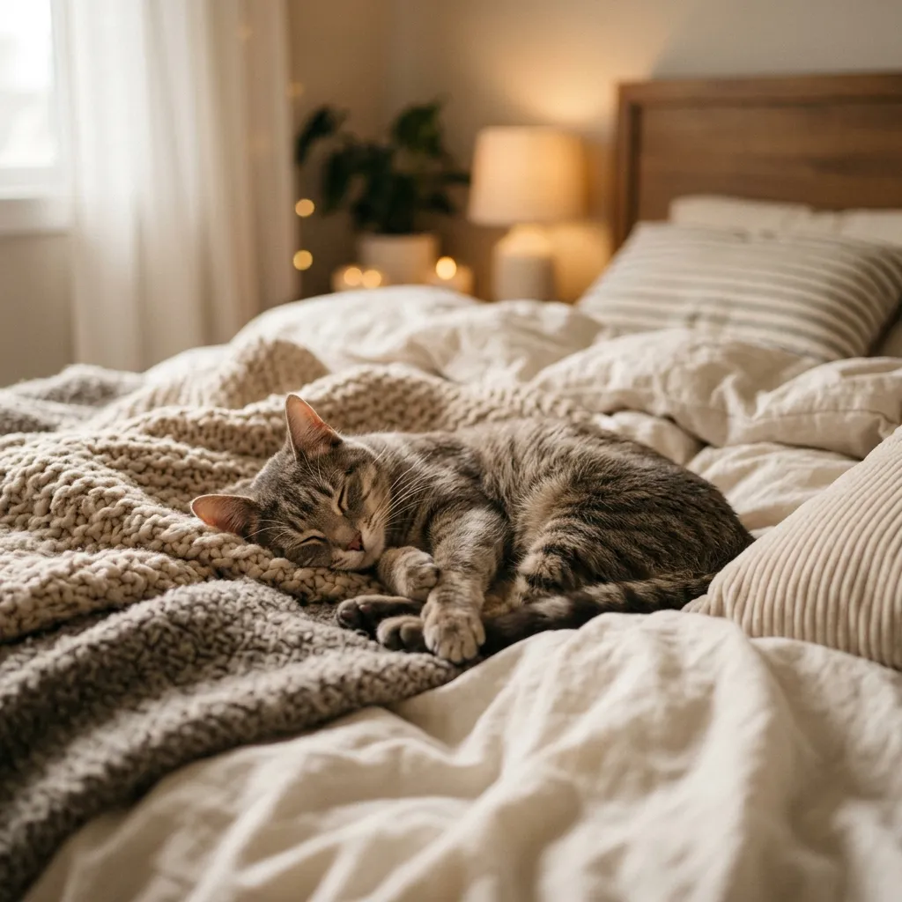
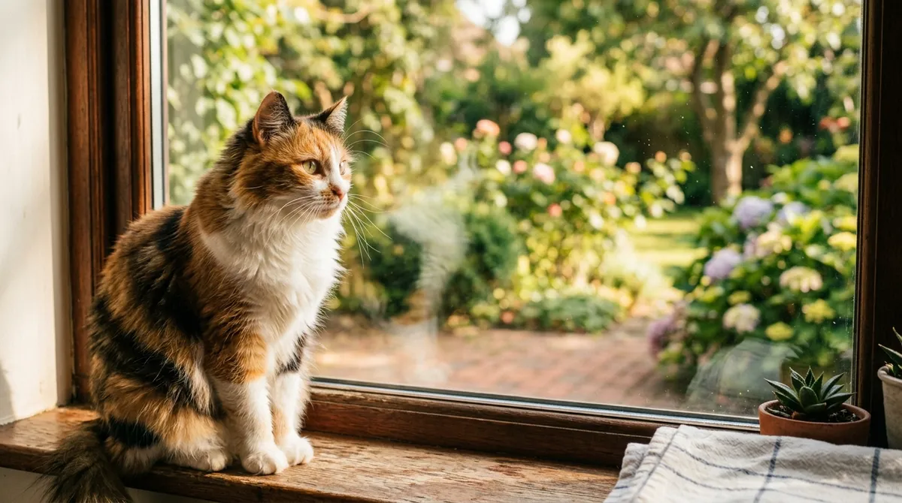

Como apresentar um novo gato aos gatos da casa
Resumo das orientações da FelineVMA para apresentar um novo gato aos que já vivem na casa.
Ler artigo completoUm artigo publicado e dois temas em preparação sobre cuidados com gatos.
Resumo das orientações da FelineVMA para apresentar um novo gato aos que já vivem na casa.
Ler artigo completo
Tema em preparação sobre lugares seguros, recursos separados e brincadeiras.
Fonte em inglês: FelineVMA (necessidades ambientais)
Tema em preparação sobre riscos de queda por janelas e varandas. A ASPCA recomenda telas firmes nas janelas abertas.
Fonte em inglês: ASPCA (riscos de queda)